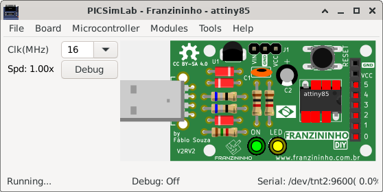
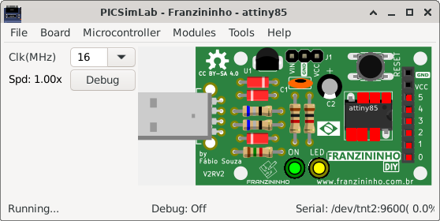

4.8 Franzininho
The Franzininho DIY board is an openhardware project, more info at https://franzininho.com.br/. It was developed to be used with the microcontroller ATtiny85 of of simavr.

The Franzininho DIY board is an openhardware project, more info at https://franzininho.com.br/. It was developed to be used with the microcontroller ATtiny85 of of simavr.
